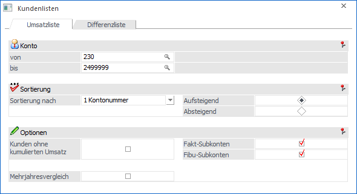
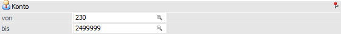
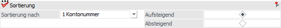
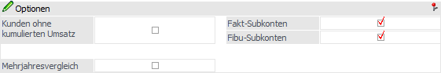
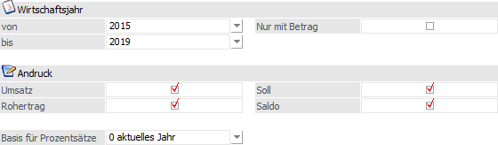
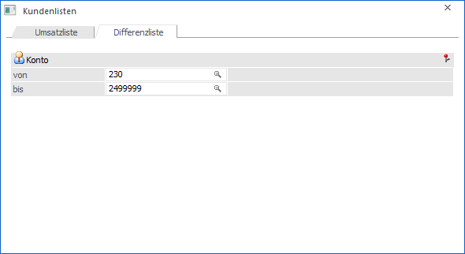
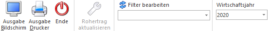

Auf der "Kundenumsatzliste", welche über den Menüpunkt…
1 WinLine FAKT
1 Auswertungen
1 Kundenumsatzliste
… ausgegeben werden kann, werden wichtige Informationen über Kunden und deren Umsätze ausgewiesen.
Register "Umsatzliste"
Über das Register "Umsatzliste" wird die Kundenumsatzliste erzeugt.

Folgende Felder stehen für die Selektion bzw. die Ausgabe bereit:
Selektion

Ø Konto von / bis
An dieser Stelle kann auf die Kontonummern eingeschränkt werden, welche auf der Liste ausgegeben werden sollen. Bleiben die Felder "von" und "bis" leer, so werden alle Kundenkonten berücksichtigt.
Sortierung

Ø Sortierung nach
Hier kann über eine Auswahlbox das Sortierkriterium ausgewählt werden. Dabei stehen folgende Möglichkeiten zur Verfügung:
ü 1 - Kontonummer
ü 2 - Umsatz
ü 3 - Rohertrag
Ø Aufsteigend / Absteigend
An dieser Stelle kann definiert werden, ob das Sortierkriterium auf- oder absteigend berücksichtig werden soll.
Optionen

Ø Kunden ohne kumulierten Umsatz
Es werden auch jene Kunden gedruckt, die in diesem Wirtschaftsjahr keinen Umsatz getätigt haben.
Ø Fakt-Subkonten
Ist diese Checkbox aktiviert, so werden in der Auswertung auch jene Konten angezeigt, die als FAKT-Subkonten definiert wurden.
Ø Fibu-Subkonten
Bei aktivierter Checkbox werden auch die Konten angezeigt, welche als FIBU-Subkonten definiert wurden.
Ø Mehrjahresvergleich
Wird die Checkbox "Mehrjahresvergleich" aktiviert, so wird das Fenster um die Auswertemöglichkeit eines Mehrjahresvergleiches erweitert.
Mehrjahresvergleich

Für den Mehrjahresvergleich stehen folgende Definitionsmöglichkeiten zur Verfügung:
Ø Wirtschaftsjahr von / bis
Aus den Auswahlboxen können die Wirtschaftsjahre gewählt werden, für die der Mehrjahresvergleich ausgegeben werden soll. Dabei können maximal 5 Jahre angegeben werden.
Ø Nur mit Betrag
Es werden nur Kunden angezeigt, die in einem der ausgewählten Wirtschaftsjahre einen entsprechenden Umsatz haben.
Ø Andruck
Durch Aktivieren der jeweiligen Checkboxen kann festgelegt werden, ob die entsprechenden Werte ausgegeben werden sollen. Folgende Einstellungen stehen hierfür zur Verfügung:
ü Umsatz
ü Rohertrag
ü Soll
ü Saldo
Ø Basis für Prozentsätze
An dieser Stelle kann die Basis der Prozentsätze auf der Auswertung definiert werden.
ü 0 - aktuelles Jahr
Wird als
Basis für Prozentsätze "0 - aktuelles Jahr" gewählt, so beziehen sich die
angeführten Prozentsätze immer auf das aktuelle Wirtschaftsjahr.
Beispiel
Jahr: 2024 Umsatz:
100,00
Jahr: 2023 Umsatz: 150,00
Jahr: 2022 Umsatz: 130,00
Im Jahr
2023 werden in der Spalte Prozent "-33 %" angezeigt: der Umsatz ist im Jahr 2024
um 33% niedriger als im Jahr 2023.
Im Jahr 2022 werden in der Spalte
Prozent "-23 %" angezeigt: der Umsatz ist im Jahr 2024 um 23% niedriger als im
Jahr 2022.
ü 1 - Folgejahr
Wird als Basis
für Prozentsätze "1 - Folgejahr" gewählt, so beziehen sich die angeführten
Prozentsätze immer auf das Folgejahr.
Beispiel
Jahr: 2024 Umsatz:
100,00
Jahr: 2023 Umsatz: 150,00
Jahr: 2022 Umsatz: 130,00
Im Jahr
2023 werden in der Spalte Prozent "-33 %" angezeigt. D.h. der Umsatz ist im Jahr
2024 um 33% niedriger als im Jahr 2023.
Im Jahr 2022 werden in der Spalte
Prozent "15 %" angezeigt: der Umsatz ist im Jahr 2023 um 15% höher als im Jahr
2022.
Register "Differenzliste"
Die erwirtschafteten Roherträge werden im Kontenstamm der Debitoren und in der Statistiktabelle abgespeichert. Sollte nun eine Differenz zwischen Kontenstamm und Statistiktabelle existieren, dann wird dieses in der "Differenzliste Rohertrag" ausgewiesen.
Hinweis
Die Roherträge im Kontenstamm können mit Hilfe des Buttons "Rohertrag aktualisieren" auf Grundlage der Statistiktabelle neu aufgebaut werden.

Ø Konto von / bis
An dieser Stelle kann auf die Konten eingeschränkt werden, bei denen eine Prüfung durchgeführt werden soll. Bleiben die Felder "von" und "bis" leer, so werden alle Kundenkonten berücksichtigt.
Buttons

Ø Ausgabe Bildschirm
Mit Hilfe des Buttons "Ausgabe Bildschirm" oder der Taste F5 wird die Liste am Bildschirm ausgegeben.
Ø Ausgabe Drucker
Durch Anwahl des Buttons "Ausgabe Drucker" wird die Liste am Drucker ausgegeben.
Ø Ende
Durch Anwahl des Buttons "Ende" oder der Taste ESC wird das Fenster geschlossen.
Ø Rohertrag aktualisieren (nur im Register "Differenzliste")
Der Button "Rohertrag aktualisieren" kann nur im Register "Differenz" angewählt werden und bezieht sich auf die dort getroffene Selektion. Durch Anwahl werden die Roherträge nach einer Sicherheitsabfrage im Kontenstamm auf Grundlage der Statistiktabelle aktualisiert. Das Protokoll kann anschließend im Spooler eingesehen werden.
Hinweis
Nur Benutzer des Typs "Administrator" oder mit der Administratorenberechtigung "Datenadministrator" sind berechtigt die Roherträge zu aktualisieren, d.h. den Button anzuwählen.
Ø Filter bearbeiten
Durch Anklicken des "Filter"-Buttons kann die Kundenumsatzliste nach frei definierbaren Kriterien eingeschränkt und sortiert werden.
Ø Wirtschaftsjahr
Über die Auswahlbox "Wirtschaftsjahr" in der Buttonleiste kann das Wirtschaftsjahr gewählt werden, für welches die Liste ausgegeben werden soll. Somit können die Daten aus den Vorjahren verglichen werden, ohne dass das Fenster geschlossen und ein manueller Wirtschaftsjahreswechsel vorgenommen werden muss.